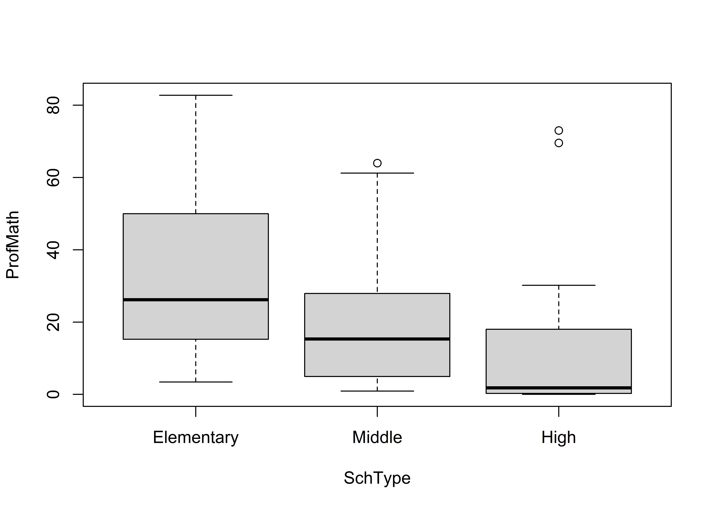

5.3 Group comparisons
5.3.1 Summary statistics by group
Comparing summary statistics across different groups or categories of cases requires that you identify the grouping variable (typically group_by()} before calculating the desired summary statistics.
dcps %>%
group_by(SchType) %>% # identify grouping variable
summarize(
Avg = mean(ProfMath), # apply functions to each group
StDev = sd(ProfMath)
)## # A tibble: 3 x 3
## SchType Avg StDev
## * <fct> <dbl> <dbl>
## 1 Elementary 34.0 23.7
## 2 Middle 19.6 17.6
## 3 High 12.9 22.55.3.2 Visualize group differences
One good way of exploring these relationships graphically is to use a boxplot. Note that the syntax is to identify the outcome before the ~ and the grouping variable after (boxplot(OutcomeVar ~ GroupVar, Data)):
boxplot(ProfMath ~ SchType, data = dcps)
5.3.3 Testing hypotheses
You can test hypotheses about the relationship between a nominal exposure variable (GroupingVar) and a numeric outcome (OutcomeVar) using either the \(t-\) or \(F-\) test. Use t.test(OutcomeVar ~ GroupVar, Data) to compare the mean outcome across exactly two groups (i.e. when GroupVar is binary). Use aov(OutcomeVar ~ GroupVar, Data) when GroupVar identifies more than two categories. Note that you need to use summary() to view the full aov() estimates.
Evaluate the argument that large schools (i.e. where more than 200 students took the test) have a significantly different level of math proficiency than small schools.
# t-test (two-group test of equivalence)
t.test(ProfMath ~ (NumTested > 200), data = dcps)##
## Welch Two Sample t-test
##
## data: ProfMath by NumTested > 200
## t = -1.1, df = 48, p-value = 0.3
## alternative hypothesis: true difference in means is not equal to 0
## 95 percent confidence interval:
## -16.67 4.56
## sample estimates:
## mean in group FALSE mean in group TRUE
## 25.33 31.39While there is a mean difference in math proficiency (31 vs 25), the difference is not statistically significant (\(p=0.257\)).
Next consider the possibility that math proficiency differs systematically across type of school. Because SchType has more than two values (Elementary, Middle, and High), we use the \(F-\)test.
# F-test (multigroup test of equivalence)
ftest = aov(ProfMath ~ SchType, data = dcps)
summary(ftest) # view the results of the F-test## Df Sum Sq Mean Sq F value Pr(>F)
## SchType 2 8244 4122 8.32 0.00044 ***
## Residuals 105 51992 495
## ---
## Signif. codes:
## 0 '***' 0.001 '**' 0.01 '*' 0.05 '.' 0.1 ' ' 1Here the results indicate a significant difference in math proficiency by type of school (\(F_{2,105}=8.35\), \(p<0.001\)).